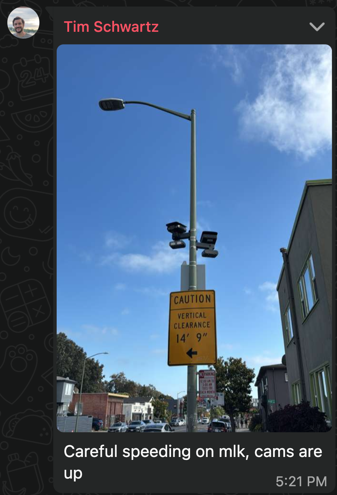
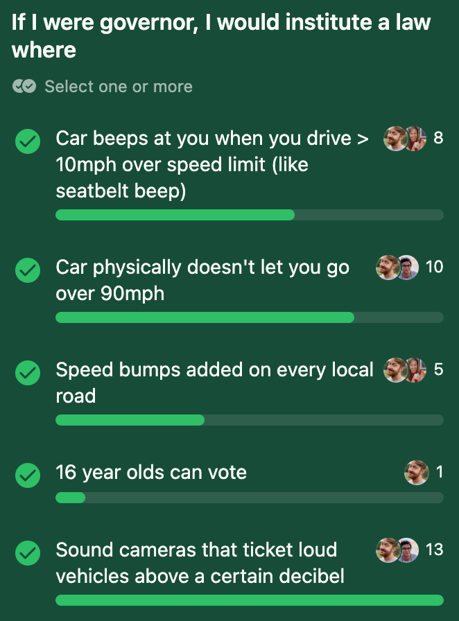

May 24, 2026
Oakland recently put up some speed cameras around the city in an attempt to reduce extreme speeding. It started an interesting debate on the usefulness of surveillance and law enforcement.

Some worried that the cameras could be used to further surveil us and some bemoaned being booted out of the all you can speed buffet.
I'm not worried about speeders rights, so my first reaction was something like "one camera? that's nothing. I think if anyone in California goes 10mph over the speed limit they should automatically be fined."
This got me thinking about other policies we could enact and I sent out a little public opinion poll

I was surprised that the noise camera idea was the most popular, but I think people just loathe the souped up cars and motorcycles that pass by our house all the time.
Apparently NYC and a few other cities have noise cameras that ticket vehicles louder than 85 decibels . I sometimes take decibel readings with my phone and can tell you that the screeching bart tunnel usually maxes out at 82 or 83 and a Dead and Co show in Golden Gate Park get get up to 86. 86 is the loudest sound I've yet recorded, so I'm amenable to 8f db cars forking over a few hundred dollars. Usually these drivers are paying more to soup up their engines and annoy everybody. Sorry, but I think if you're going to choose to bother people that much you should pay.
Stopping speeding seems like a no brainer to me. Who's out here being like "It's my right to go 10mph over the limit?". My office had a debate about speed limiters a while back. Apparently all cars have a speed limiter that cuts off your engine at 115 mph or something. And most modern cars detect speed limit signs and could turn on the speed limiter when you're 5 or 10 over. But many co workers said "what if I'm rushing to the hospital in an emergency!". I feel like not only will that save you 5 minutes TOPS, everyone speeding probably causes 100x more emergencies than would be saved by people speeding to get to the hospital.
I, for one, am glad we've been seeing success with the few cameras we do have. Long live the cameras. (and, yes apparently they cannot be used by law enforcement to do anything but speeding tickets. Plus, they only take rear license plate pics so your face won't be in it)
SF turned on their cameras 1 year ago and has seen an 80% drop in speeding. 65% of drivers who got a ticket did not get another one.